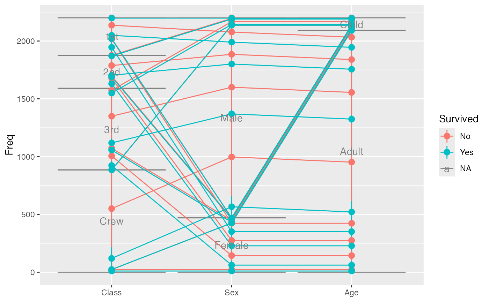
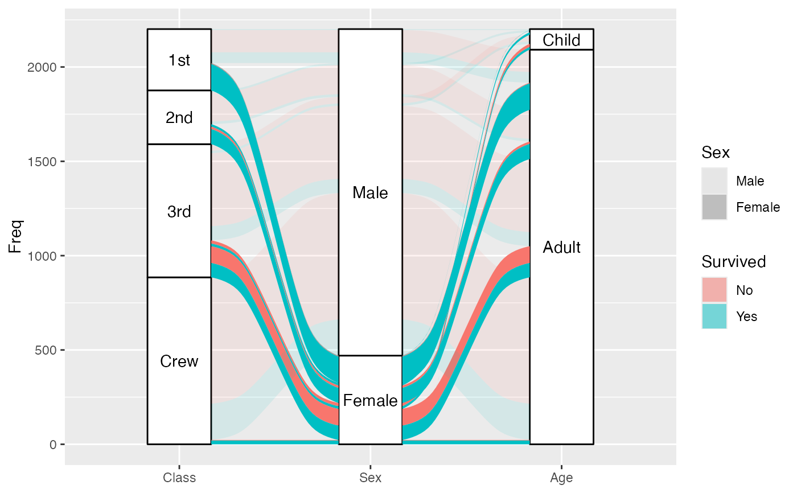
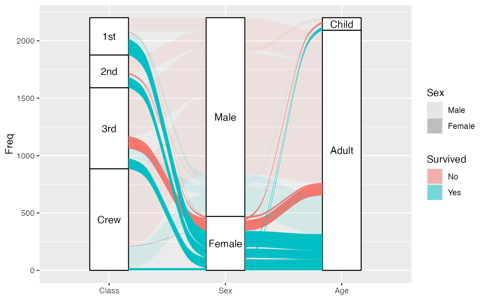
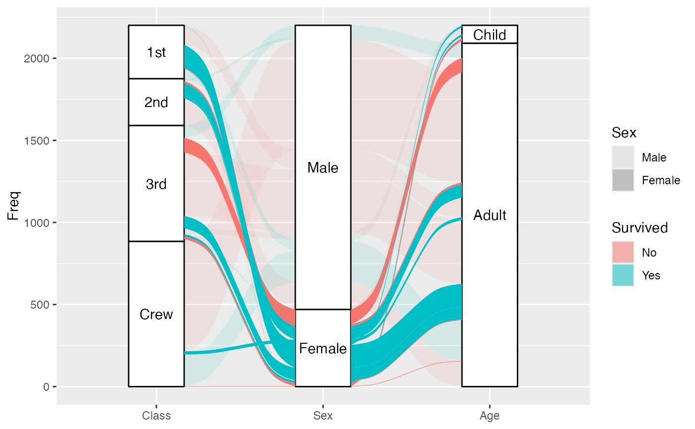
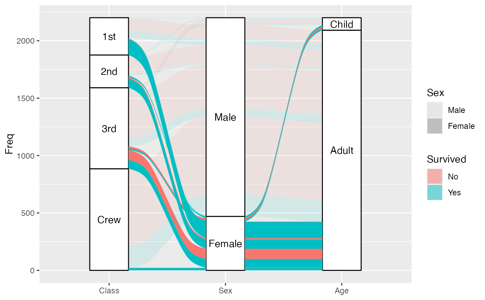
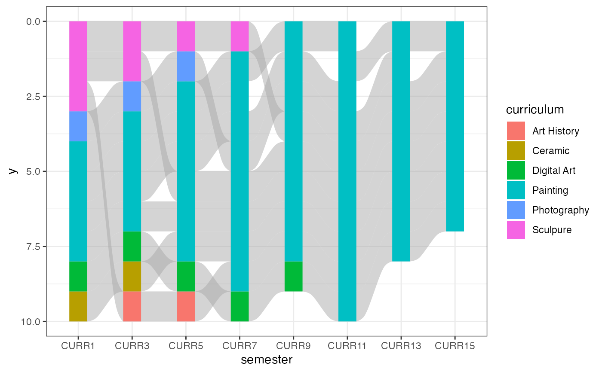
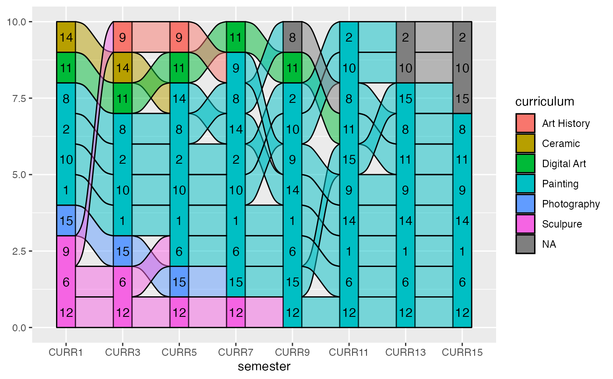
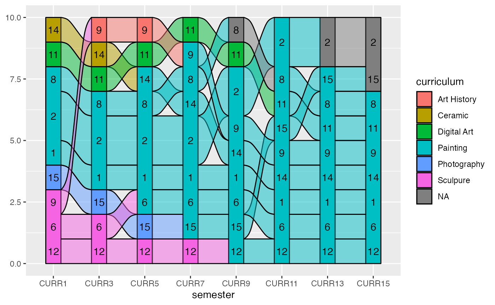

Given a dataset with alluvial structure, stat_alluvium calculates the
centroids (x and y) and heights (ymin and ymax) of the lodes, the
intersections of the alluvia with the strata. It leverages the group
aesthetic for plotting purposes (for now).
stat_alluvium( mapping = NULL, data = NULL, geom = "alluvium", position = "identity", decreasing = NULL, reverse = NULL, absolute = NULL, discern = FALSE, negate.strata = NULL, aggregate.y = NULL, cement.alluvia = NULL, lode.guidance = NULL, lode.ordering = NULL, aes.bind = NULL, infer.label = FALSE, min.y = NULL, max.y = NULL, na.rm = FALSE, show.legend = NA, inherit.aes = TRUE, ... )
| mapping | Set of aesthetic mappings created by |
|---|---|
| data | The data to be displayed in this layer. There are three options: If A A |
| geom | The geometric object to use display the data; override the default. |
| position | Position adjustment, either as a string, or the result of a call to a position adjustment function. |
| decreasing | Logical; whether to arrange the strata at each axis
in the order of the variable values ( |
| reverse | Logical; if |
| absolute | Logical; if some cases or strata are negative,
whether to arrange them (respecting |
| discern | Passed to |
| negate.strata | A vector of values of the |
| aggregate.y | Deprecated alias for |
| cement.alluvia | Logical value indicating whether to aggregate |
| lode.guidance | The function to prioritize the axis variables for
ordering the lodes within each stratum, or else a character string
identifying the function. Character options are "zigzag", "frontback",
"backfront", "forward", and "backward" (see |
| lode.ordering | Deprecated in favor of the |
| aes.bind | At what grouping level, if any, to prioritize differentiation
aesthetics when ordering the lodes within each stratum. Defaults to
|
| infer.label | Logical; whether to assign the |
| min.y | Numeric; bounds on the heights of the strata to be
rendered. Use these bounds to exclude strata outside a certain range, for
example when labeling strata using |
| max.y | Numeric; bounds on the heights of the strata to be
rendered. Use these bounds to exclude strata outside a certain range, for
example when labeling strata using |
| na.rm | Logical:
if |
| show.legend | logical. Should this layer be included in the legends?
|
| inherit.aes | If |
| ... | Additional arguments passed to |
stat_alluvium, stat_flow, and stat_stratum require one
of two sets of aesthetics:
x and at least one of alluvium and stratum
any number of axis[0-9]* (axis1, axis2, etc.)
Use x, alluvium, and/or stratum for data in lodes format
and axis[0-9]* for data in alluvia format (see alluvial-data).
Arguments to parameters inconsistent with the format will be ignored.
Additionally, each stat_*() accepts the following optional
aesthetics:
y
weight
order
group
label
y controls the heights of the alluvia,
and may be aggregated across equivalent observations.
weight applies to the computed variables (see that section below)
but does not affect the positional aesthetics.
order, recognized by stat_alluvium() and stat_flow(), is used to
arrange the lodes within each stratum. It tolerates duplicates and takes
precedence over the differentiation aesthetics (when aes.bind is not
"none") and lode guidance with respect to the remaining axes. (It replaces
the deprecated parameter lode.ordering.)
group is used internally; arguments are ignored.
label is used to label the strata or lodes and must take a unique value
across the observations within each stratum or lode.
These and any other aesthetics are aggregated as follows:
Numeric aesthetics, including y, are summed.
Character and factor aesthetics, including label,
are assigned to strata or lodes provided they take unique values across the
observations within each (and are otherwise assigned NA).
These can be used with
ggplot2::after_stat() to control aesthetic evaluation.
nnumber of cases in lode
countcumulative weight of lode
propweighted proportion of lode
stratumvalue of variable used to define strata
depositorder in which (signed) strata are deposited
lodelode label distilled from alluvia
(stat_alluvium() and stat_flow() only)
flowdirection of flow "to" or "from" from its axis
(stat_flow() only)
The numerical variables n, count, and prop are calculated after the
data are grouped by x and weighted by weight (in addition to y).
The integer variable deposit is used internally to sort the data before
calculating heights. The character variable lode is obtained from
alluvium according to distill.
stat_stratum, stat_alluvium, and stat_flow order strata and lodes
according to the values of several parameters, which must be held fixed
across every layer in an alluvial plot. These package-specific options set
global values for these parameters that will be defaulted to when not
manually set:
ggalluvial.decreasing (each stat_*): defaults to NA.
ggalluvial.reverse (each stat_*): defaults to TRUE.
ggalluvial.absolute (each stat_*): defaults to TRUE.
ggalluvial.cement.alluvia (stat_alluvium): defaults to FALSE.
ggalluvial.lode.guidance (stat_alluvium): defaults to "zigzag".
ggalluvial.aes.bind (stat_alluvium and stat_flow): defaults to
"none".
See base::options() for how to use options.
The previously defunct parameters weight and aggregate.wts have been
discontinued. Use y and cement.alluvia instead.
ggplot2::layer() for additional arguments and geom_alluvium(),
geom_lode(), and geom_flow() for the corresponding geoms.
Other alluvial stat layers:
stat_flow(),
stat_stratum()
# illustrate positioning ggplot(as.data.frame(Titanic), aes(y = Freq, axis1 = Class, axis2 = Sex, axis3 = Age, color = Survived)) + stat_stratum(geom = "errorbar") + geom_line(stat = "alluvium") + stat_alluvium(geom = "pointrange") + geom_text(stat = "stratum", aes(label = after_stat(stratum))) + scale_x_discrete(limits = c("Class", "Sex", "Age"))  # lode ordering examples gg <- ggplot(as.data.frame(Titanic), aes(y = Freq, axis1 = Class, axis2 = Sex, axis3 = Age)) + geom_stratum() + geom_text(stat = "stratum", aes(label = after_stat(stratum))) + scale_x_discrete(limits = c("Class", "Sex", "Age")) # use of lode controls gg + geom_flow(aes(fill = Survived, alpha = Sex), stat = "alluvium", lode.guidance = "forward") #> Warning: Using alpha for a discrete variable is not advised.  # prioritize aesthetic binding gg + geom_flow(aes(fill = Survived, alpha = Sex), stat = "alluvium", aes.bind = "alluvia", lode.guidance = "forward") #> Warning: Using alpha for a discrete variable is not advised.  # use of custom lode order gg + geom_flow(aes(fill = Survived, alpha = Sex, order = sample(x = 32)), stat = "alluvium") #> Warning: Ignoring unknown aesthetics: order #> Warning: Using alpha for a discrete variable is not advised.  # use of custom luide guidance function lode_custom <- function(n, i) { stopifnot(n == 3) switch( i, `1` = 1:3, `2` = c(2, 3, 1), `3` = 3:1 ) } gg + geom_flow(aes(fill = Survived, alpha = Sex), stat = "alluvium", aes.bind = "flow", lode.guidance = lode_custom) #> Warning: Using alpha for a discrete variable is not advised.  # omit missing elements & reverse the `y` axis ggplot(ggalluvial::majors, aes(x = semester, stratum = curriculum, alluvium = student, y = 1)) + geom_alluvium(fill = "darkgrey", na.rm = TRUE) + geom_stratum(aes(fill = curriculum), color = NA, na.rm = TRUE) + theme_bw() + scale_y_reverse()  if (FALSE) { # alluvium cementation examples gg <- ggplot(ggalluvial::majors, aes(x = semester, stratum = curriculum, alluvium = student, fill = curriculum)) + geom_stratum() # diagram with outlined alluvia and labels gg + geom_flow(stat = "alluvium", color = "black") + geom_text(aes(label = after_stat(lode)), stat = "alluvium") # cemented diagram with default distillation (first most common alluvium) gg + geom_flow(stat = "alluvium", color = "black", cement.alluvia = TRUE) + geom_text(aes(label = after_stat(lode)), stat = "alluvium", cement.alluvia = TRUE) # cemented diagram with custom label distillation gg + geom_flow(stat = "alluvium", color = "black", cement.alluvia = TRUE) + geom_text(aes(label = after_stat(lode)), stat = "alluvium", cement.alluvia = TRUE, distill = function(x) paste(x, collapse = "; ")) } if (FALSE) { data(babynames, package = "babynames") # a discontiguous alluvium bn <- subset(babynames, prop >= .01 & sex == "F" & year > 1962 & year < 1968) ggplot(data = bn, aes(x = year, alluvium = name, y = prop)) + geom_alluvium(aes(fill = name, color = name == "Tammy"), decreasing = TRUE, show.legend = FALSE) + scale_color_manual(values = c("#00000000", "#000000")) # expanded to include missing values bn2 <- merge(bn, expand.grid(year = unique(bn$year), name = unique(bn$name)), all = TRUE) ggplot(data = bn2, aes(x = year, alluvium = name, y = prop)) + geom_alluvium(aes(fill = name, color = name == "Tammy"), decreasing = TRUE, show.legend = FALSE) + scale_color_manual(values = c("#00000000", "#000000")) # with missing values filled in with zeros bn2$prop[is.na(bn2$prop)] <- 0 ggplot(data = bn2, aes(x = year, alluvium = name, y = prop)) + geom_alluvium(aes(fill = name, color = name == "Tammy"), decreasing = TRUE, show.legend = FALSE) + scale_color_manual(values = c("#00000000", "#000000")) } # use negative y values to encode deaths versus survivals titanic <- as.data.frame(Titanic) titanic <- transform(titanic, Lives = Freq * (-1) ^ (Survived == "No")) ggplot(subset(titanic, Class != "Crew"), aes(axis1 = Class, axis2 = Sex, axis3 = Age, y = Lives)) + geom_alluvium(aes(alpha = Survived, fill = Class), absolute = FALSE) + geom_stratum(absolute = FALSE) + geom_text(stat = "stratum", aes(label = after_stat(stratum)), absolute = FALSE) + scale_x_discrete(limits = c("Class", "Sex", "Age"), expand = c(.1, .05)) + scale_alpha_discrete(range = c(.25, .75), guide = "none") #> Warning: Using alpha for a discrete variable is not advised.  # faceting with common alluvia ggplot(titanic, aes(y = Freq, axis1 = Class, axis2 = Sex, axis3 = Age)) + facet_wrap(~ Survived) + geom_alluvium() + geom_stratum() + geom_text(stat = "stratum", aes(label = after_stat(stratum)))  ggplot(transform(alluvial::Refugees, id = 1), aes(y = refugees, x = year, alluvium = id)) + facet_wrap(~ country) + geom_alluvium(alpha = .75, color = "darkgrey") + scale_x_continuous(breaks = seq(2004, 2012, 4))